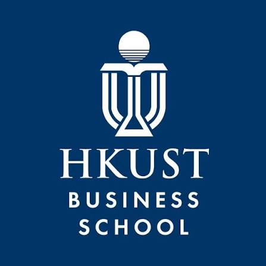

Research · Engineering
Data Engineer Assistant
HKUST · ISOM Department

- Developed an automated end-to-end ETL pipeline for Mac and Linux using Python, Selenium, and the Gmail API, reducing tick-by-tick stock data processing from two weeks to 24 hours.
- Built an interactive R Shiny dashboard to filter financial data and improve accessibility for stakeholders.
- Translated legacy Stata and MATLAB scripts into R, and created cleaning scripts to parse, label, and merge monthly data into multi-year datasets.
- Built an HTML website for an international econometrics conference and managed attendee operations with Qualtrics.